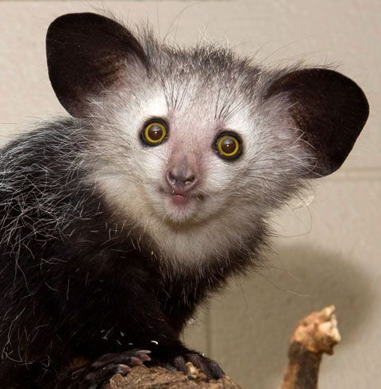
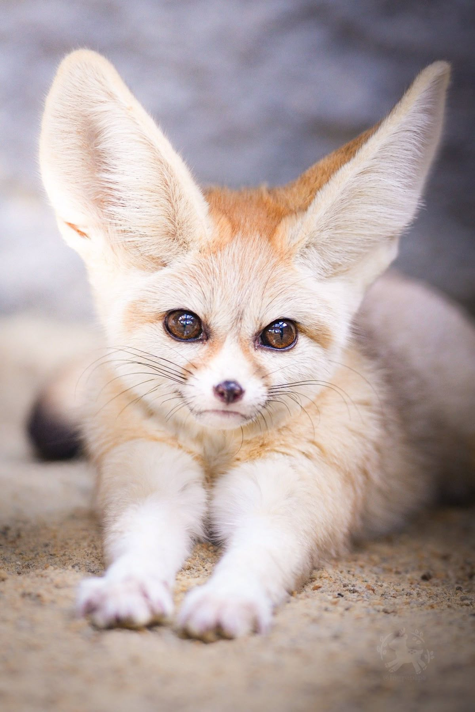

Красная панда
Красная панда
Красная панда
Красная панда — небольшое млекопитающее с густой рыжей шерстью, светлой мордочкой и длинным пушистым хвостом с кольцами. Она обитает в горных лесах Азии и большую часть времени проводит среди деревьев.
Основу питания красной панды составляет бамбук. Она также может поедать плоды, насекомых и другую пищу. Несмотря на принадлежность к отряду хищных, её рацион преимущественно растительный.
Красная панда хорошо лазает по деревьям. Длинный хвост помогает ей сохранять равновесие, а во время отдыха в холодную погоду служит укрытием. Обычно эти животные живут поодиночке.
 Окапи
Окапи
Окапи — необычное млекопитающее семейства жирафовых. Его ноги покрыты светлыми и тёмными полосами, напоминающими окраску зебры. Туловище имеет тёмно-коричневый оттенок, а большие уши помогают улавливать звуки в густом лесу.
Окапи обитает во влажных тропических лесах Демократической Республики Конго в Центральной Африке. Это скрытное животное, которое обычно живёт поодиночке. Полосатая окраска помогает ему оставаться незаметным среди растительности.
Окапи питается листьями, почками и молодыми побегами. Длинным подвижным языком он захватывает растительную пищу и срывает листья с ветвей. Несмотря на внешнее сходство с зеброй, его ближайший современный родственник — жираф.
 Панголин
Панголин
Панголины — млекопитающие, большая часть тела которых покрыта крупными прочными чешуями. Чешуя состоит из кератина — вещества, из которого образованы человеческие ногти. При опасности панголин сворачивается в плотный клубок, защищая мягкое брюшко.
Разные виды панголинов обитают в Африке и Азии. Среди них есть как наземные животные, так и виды, хорошо приспособленные к жизни на деревьях. Обычно панголины живут поодиночке и проявляют активность преимущественно ночью.

Мадагаскарская руконожка, или ай-айМадагаскарская руконожка — необычный примат с большими ушами, крупными глазами и длинным пушистым хвостом. Её тело покрыто тёмной грубой шерстью. Особенно выделяется тонкий удлинённый средний палец, который помогает животному добывать пищу.
Руконожка встречается только на Мадагаскаре. Она живёт в лесах и большую часть времени проводит на деревьях. Днём животное отдыхает в гнезде из ветвей и листьев, а ночью отправляется на поиски пищи.
Ай-ай питается личинками насекомых, плодами, семенами и другой пищей. В поисках личинок руконожка простукивает древесину пальцем и прислушивается к звукам. Затем она прогрызает кору крепкими резцами и извлекает добычу своим длинным пальцем.

ФенекФенек — небольшая лисица с очень большими ушами, светлой шерстью и пушистым хвостом. Песочная окраска помогает ему оставаться незаметным в пустыне. Большие уши позволяют хорошо слышать добычу и помогают отдавать лишнее тепло.
Фенек обитает в пустынях Северной Африки. От дневной жары он прячется в норе, а на поиски пищи обычно выходит ночью. Подошвы его лап покрыты шерстью, которая помогает защищать их от горячего песка.
Фенек питается насекомыми, мелкими позвоночными, яйцами, а также плодами и другими частями растений. Значительную часть необходимой влаги он получает из пищи. Острый слух и хорошее обоняние помогают ему находить корм в условиях пустыни.